2.4 Groups 1 - 2
Periodic trends, reactions, thermal stability, flame tests and qualitative analysis
2.4 Groups 1 - 2
本页对应 2.4 Groups 1 - 2.pdf.pdf，整理 Group 1 alkali metals 和 Group 2 alkaline earth metals 的 trends、reactions、thermal stability、solubility、flame tests 与 qualitative tests。专业词汇保留 English。
Learning objectives
学完本页后，你应该能够：
- explain ionisation-energy and reactivity trends down Groups 1 and 2；
- write equations for reactions with oxygen、chlorine、water and acids；
- compare Group 2 hydroxide / sulfate solubility trends；
- explain thermal stability of Group 1 and Group 2 carbonates / nitrates using polarisation；
- identify metal ions with flame tests；
- carry out qualitative tests for ammonium、carbonate、hydrogencarbonate and sulfate ions。
2.4.1 Ionisation energy - Groups 1 and 2
Electron configurations and ions
Group 1 metals have one electron in the outer principal quantum shell；Group 2 metals have two。它们可通过 losing outer electrons form stable ions：
\[ \ce{M -> M+ + e-}\qquad\text{(Group 1)} \]
\[ \ce{M -> M^{2+} + 2e-}\qquad\text{(Group 2)} \]
Because these metals donate electrons，they act as reducing agents，and the metal atoms themselves are oxidised。
Trend down a group
Going down Group 1 or Group 2：
- nuclear charge increases；
- number of occupied electron shells increases；
- shielding effect increases；
- outer electron is further from the nucleus；
- nuclear attraction on the outer electron becomes weaker overall；
- first ionisation energy decreases。
虽然 nuclear charge increases，distance and shielding 的 effect outweigh the increased attraction。于是 outer electron 更容易 remove，metal reactivity increases down both groups。
First ionisation energy 是 remove one mole of electrons from one mole of gaseous atoms to form one mole of gaseous 1+ ions 所需的 enthalpy change。Second ionisation energy 是 remove the second electron from gaseous 1+ ions。
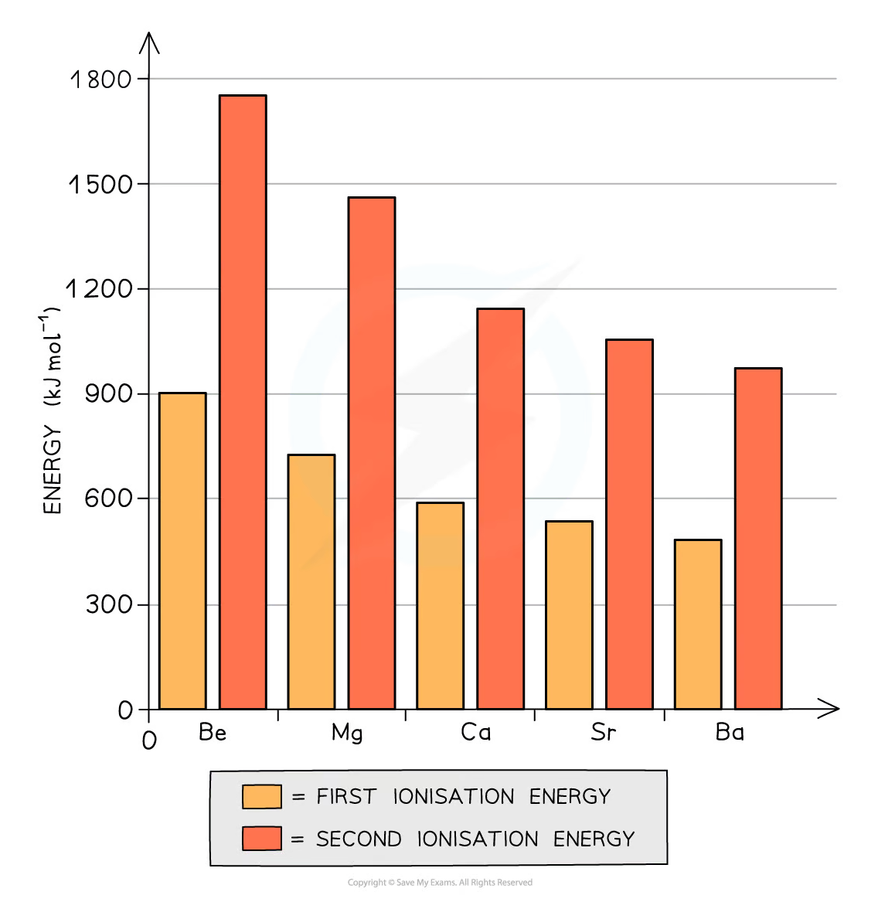
2.4.2 Reactivity and reactions
Group 1 reactivity
Group 1 reactivity increases down the group，因为 only one outer electron needs to be lost。观察 reactions with water：
| Metal | Equation | Typical observation |
|---|---|---|
| Lithium | 2Li + 2H₂O → 2LiOH + H₂ |
relatively slow，fizzes；does not melt |
| Sodium | 2Na + 2H₂O → 2NaOH + H₂ |
heat melts metal into a ball；hydrogen may ignite |
| Potassium | 2K + 2H₂O → 2KOH + H₂ |
very vigorous；hydrogen burns with lilac flame |
Products contain soluble metal hydroxide，so the solution becomes alkaline。
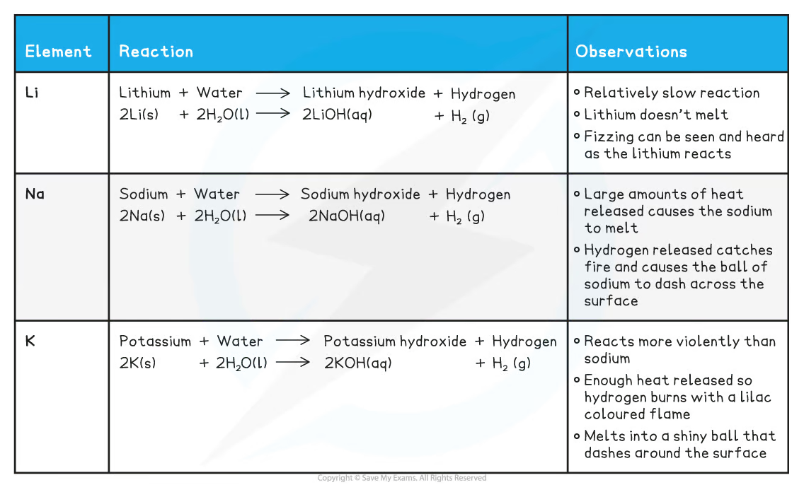
Reactions with oxygen and chlorine
Group 1 metals tarnish in air as they react with oxygen。Product depends on the metal：
\[ \ce{4Li + O2 -> 2Li2O} \]
\[ \ce{4Na + O2 -> 2Na2O} \]
Potassium commonly forms a superoxide：
\[ \ce{K + O2 -> KO2} \]
With chlorine，all Group 1 metals form white ionic chlorides：
\[ \ce{2M + Cl2 -> 2MCl} \]
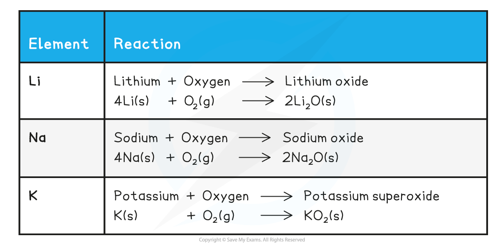
Group 2 reactivity
Group 2 metals must lose two outer electrons，but the same down-group factors make this easier for heavier metals。Reactivity therefore increases down Group 2。
Magnesium reacts only very slowly with cold water；calcium reacts more vigorously and exothermically：
\[ \ce{Mg + 2H2O(l) -> Mg(OH)2 + H2} \]
\[ \ce{Mg + H2O(g) -> MgO + H2} \]
\[ \ce{Ca + 2H2O(l) -> Ca(OH)2 + H2} \]
With oxygen：
\[ \ce{2M + O2 -> 2MO} \]
and with chlorine：
\[ \ce{M + Cl2 -> MCl2} \]
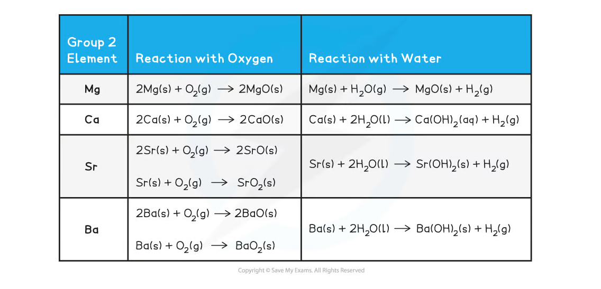
2.4.3 Oxides and hydroxides
Basic behaviour
Metal oxides react with water to form hydroxides；metal oxides and hydroxides react with acids to form salt and water。
General patterns：
\[ \ce{metal\ oxide + H2O -> metal\ hydroxide} \]
\[ \ce{metal\ oxide + acid -> salt + H2O} \]
\[ \ce{metal\ hydroxide + acid -> salt + H2O} \]
Group 1 oxide：
\[ \ce{Na2O(s) + H2O(l) -> 2NaOH(aq)} \]
Group 2 oxides are basic，except BeO which is amphoteric。For example：
\[ \ce{CaO(s) + H2O(l) -> Ca(OH)2(aq)} \]
Group 2 oxides become more reactive with water down the group；magnesium oxide gives only a weakly alkaline mixture because Mg(OH)₂ is sparingly soluble，whereas calcium oxide reacts vigorously。
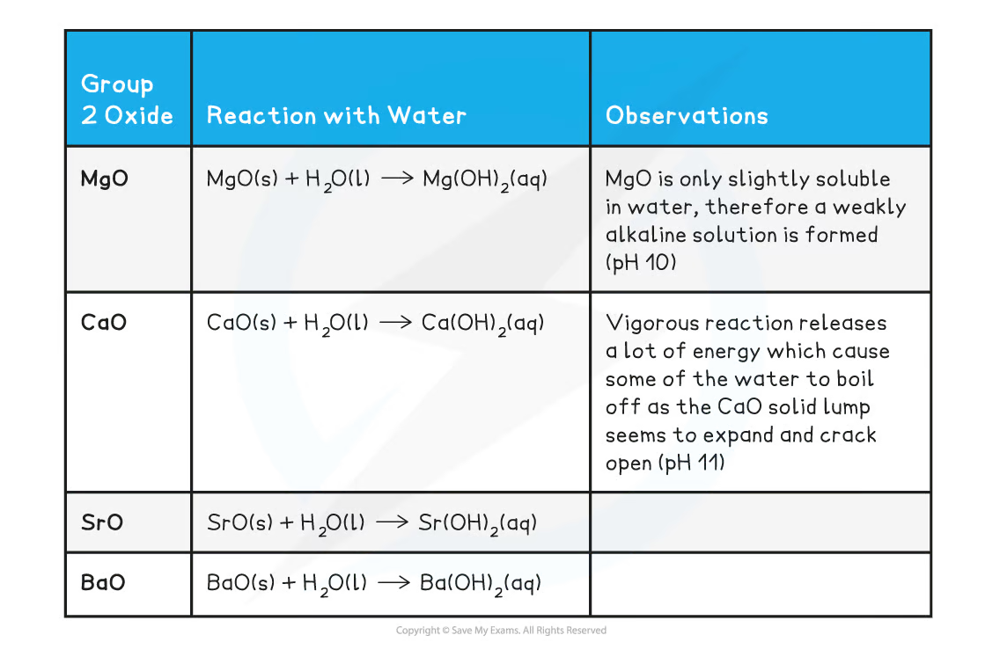
Reactions with dilute acids
Examples：
\[ \ce{NaOH(aq) + HCl(aq) -> NaCl(aq) + H2O(l)} \]
\[ \ce{MgO(s) + H2SO4(aq) -> MgSO4(aq) + H2O(l)} \]
\[ \ce{Ba(OH)2(s) + H2SO4(aq) -> BaSO4(s) + 2H2O(l)} \]
The last reaction forms insoluble white BaSO₄，so a surface coating can slow further reaction if the solid oxide / hydroxide is not powdered and stirred。
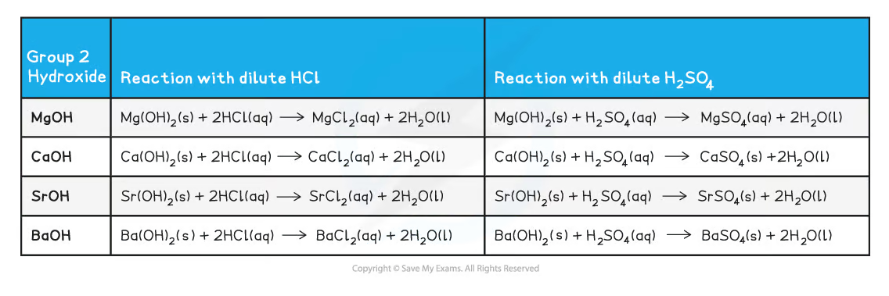
2.4.4 Group 2 hydroxides and sulfates
Hydroxide solubility
Going down Group 2，hydroxide solubility increases：
\[ \ce{M(OH)2(s) <=> M^{2+}(aq) + 2OH-(aq)} \]
More soluble hydroxide produces a higher OH⁻ concentration，so the solution is more alkaline and pH increases down the group。
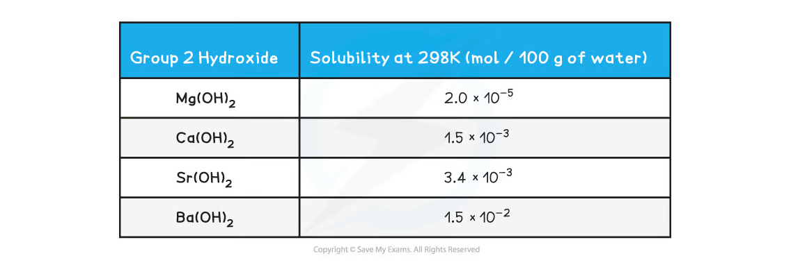
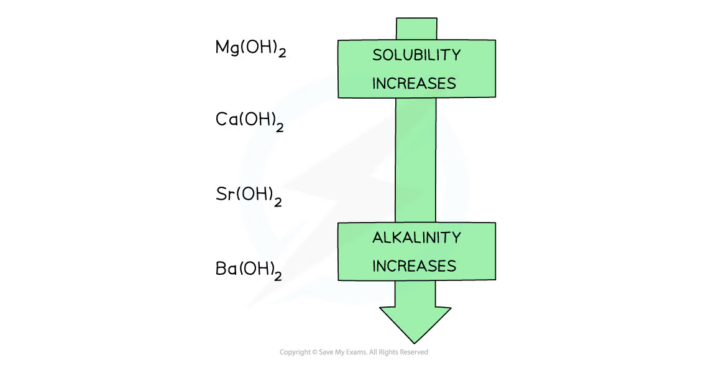
Group 1 hydroxides are generally much more soluble than Group 2 hydroxides；for example KOH is more soluble than Ba(OH)₂ despite barium being lower in Group 2。
Sulfate solubility
The opposite trend applies to Group 2 sulfates：solubility decreases down the group。BaSO₄ is insoluble and forms a white precipitate。
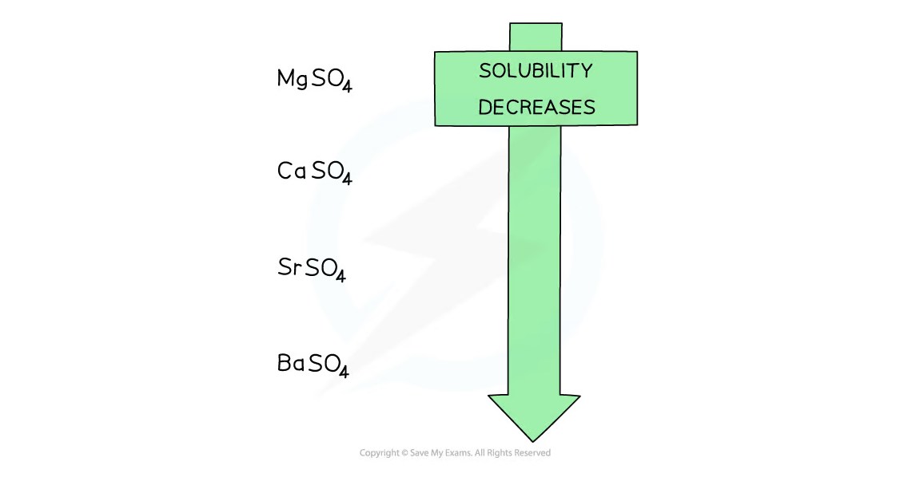
2.4.5 Nitrates and carbonates - thermal stability
Thermal decomposition
Thermal decomposition 是 using heat to break a compound into two or more different substances。
Group 2 carbonates decompose to metal oxide and carbon dioxide：
\[ \ce{MCO3(s) ->[heat] MO(s) + CO2(g)} \]
Group 2 nitrates decompose to metal oxide、nitrogen dioxide and oxygen：
\[ \ce{2M(NO3)2(s) ->[heat] 2MO(s) + 4NO2(g) + O2(g)} \]
For Group 1：
Li₂CO₃andLiNO₃decompose more readily than the other Group 1 salts；- Group 1 carbonates are generally thermally stable except lithium carbonate；
LiNO₃givesLi₂O、NO₂andO₂；- other Group 1 nitrates give the metal nitrite and oxygen。
Thermal stability increases down Groups 1 and 2，so a higher temperature is required for decomposition lower in the group。
Polarisation explanation
Small cations with high charge density have greater polarising power。They attract / distort the electron cloud of large carbonate or nitrate anions，weakening internal covalent bonds in the anion and making decomposition easier。
Down the group，cation radius increases and charge density decreases；polarisation becomes weaker，anion bonds remain stronger，and thermal stability increases。
2.4.6 Flame tests
Principle
In a flame test，heat excites electrons in a metal atom or ion to a higher energy level。When electrons fall back to lower levels，energy is emitted as visible light of characteristic wavelength。
The wire loop must be cleaned with concentrated hydrochloric acid and heated until it gives no colour，to avoid contamination。Dip the clean loop into the sample and hold it at the edge of a blue Bunsen flame；do not let the wire glow red because this can obscure the flame colour。
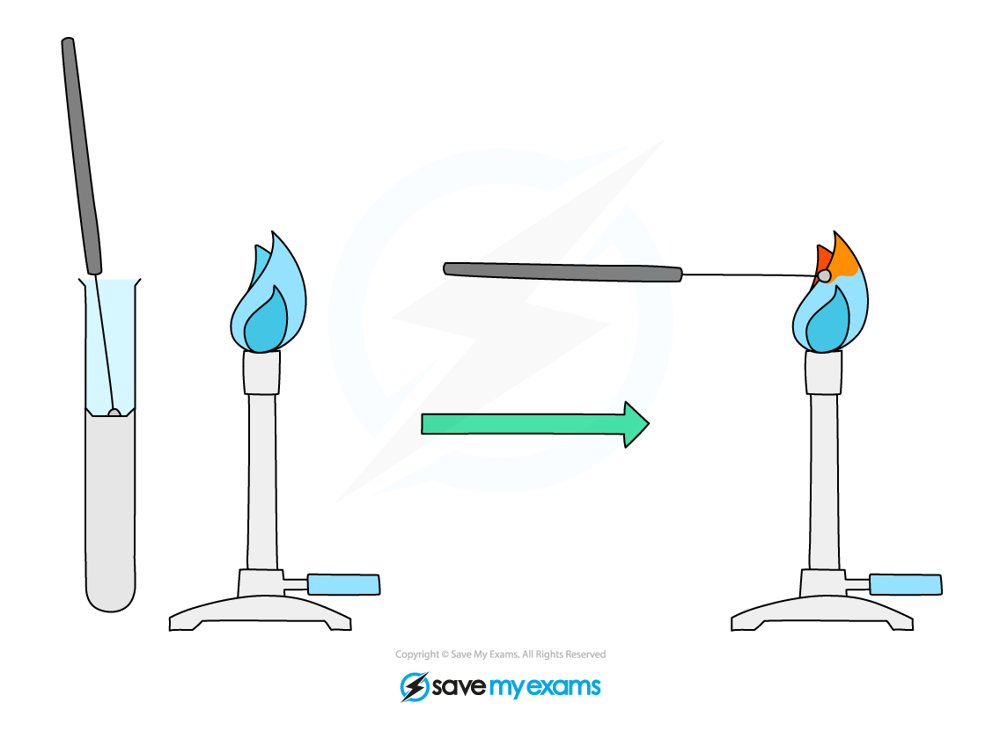
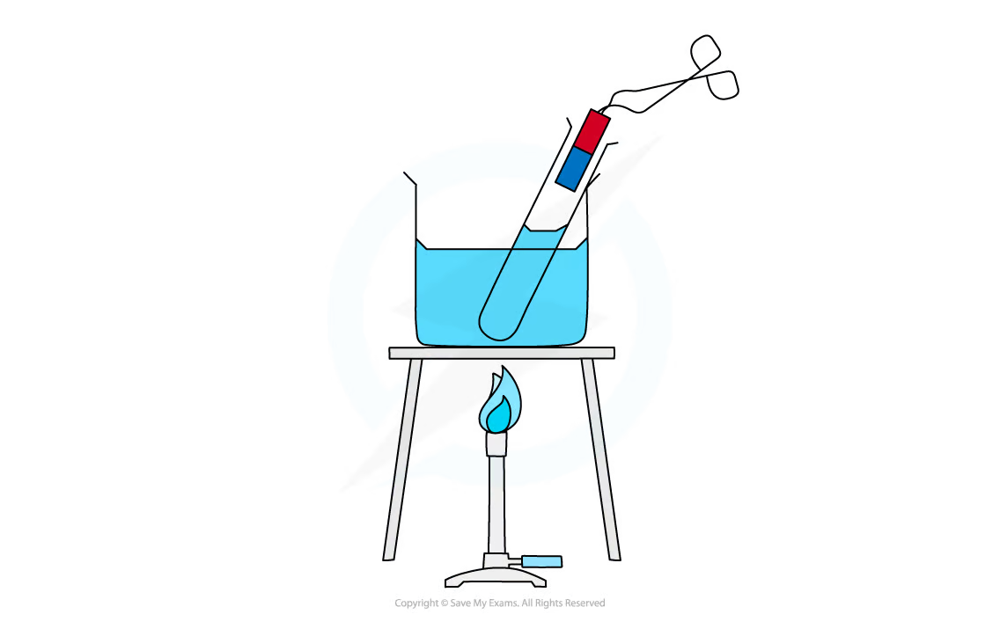
Characteristic colours
| Ion | Flame colour |
|---|---|
Li⁺ |
crimson / scarlet red |
Na⁺ |
yellow |
K⁺ |
lilac |
Rb⁺ |
red |
Cs⁺ |
blue |
Ca²⁺ |
brick red / orange-red |
Sr²⁺ |
red |
Ba²⁺ |
apple green |
Mg²⁺ |
no characteristic visible flame colour |
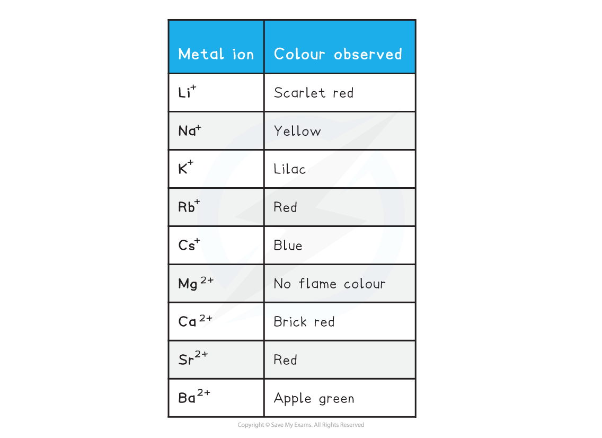
Flame tests are qualitative：they identify likely metal ions by colour，but mixed ions can produce misleading colours。
2.4.7 Qualitative tests
If the sample is solid，first dissolve it in deionised water to produce an aqueous solution。Use clean apparatus and run a control where appropriate。
Ammonium ions
Add aqueous sodium hydroxide to the sample and warm gently：
\[ \ce{NH4+ (aq) + OH- (aq) -> NH3(g) + H2O(l)} \]
Test the gas with damp red litmus paper。A positive result is that red litmus turns blue because the gas is alkaline ammonia。Alternatively，ammonia forms dense white smoke with hydrogen chloride：
\[ \ce{NH3(g) + HCl(g) -> NH4Cl(s)} \]
Carbonate and hydrogencarbonate ions
Add dilute hydrochloric acid。Effervescence indicates carbon dioxide：
\[ \ce{2H+ (aq) + CO3^{2-}(aq) -> CO2(g) + H2O(l)} \]
\[ \ce{H+ (aq) + HCO3-(aq) -> CO2(g) + H2O(l)} \]
Bubble the gas through limewater, Ca(OH)₂(aq)。A positive result is milky / cloudy limewater due to white calcium carbonate precipitate：
\[ \ce{Ca(OH)2(aq) + CO2(g) -> CaCO3(s) + H2O(l)} \]

Sulfate ions
Acidify the sample with dilute hydrochloric acid，then add aqueous barium chloride：
\[ \ce{Ba^{2+}(aq) + SO4^{2-}(aq) -> BaSO4(s)} \]
White precipitate of BaSO₄ confirms sulfate ions。Acidification removes carbonate interference，because carbonate could otherwise form a precipitate with barium ions。
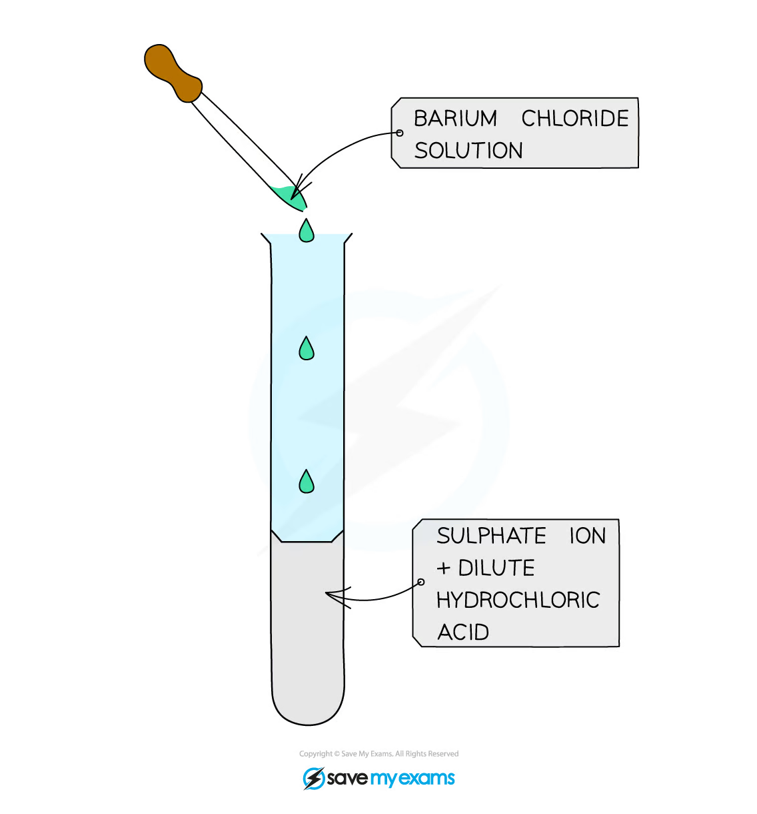
Exam checklist
Source note
本页内容来自项目内的 Note per Chapter/Note per Chapter/2.4 Groups 1 - 2.pdf.pdf。PDF 中的 trend graphs、reaction tables、flame-test diagrams 和 qualitative-test diagrams 已独立提取并统一处理为 white-background PNG，存放在 assets/notes/2-4-groups-1-2/。